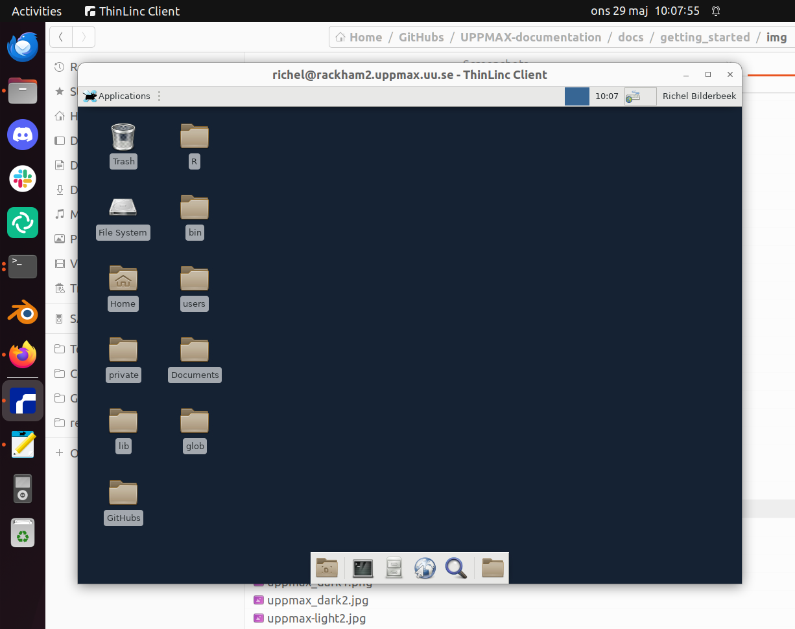

Pre-requirements
To be able to follow this course, you need to be able to log in to at least one of our HPC clusters, in at least one way.
Note
There will be an opportunity to get help with log in every morning of the workshop at 9:00.
You are also welcome to join the On-boarding at 11:00 the day before the ordinary program starts.
Log in to one of the HPC systems covered in this course
These are the ways to access your HPC cluster:
Kebnekaise and Rackham offer a website to access a remote desktop environment that one can use without any installation.

Kebnekaise and Rackham allow to access a remote desktop environment via a local ThinLinc client.
{kind=link}

All centers allow to access a terminal environment via an SSH client.

To learn how to log in to your cluster so, follow its documentation:
LUNARC does not have documentation yet. If they do, please contribute
Need help? Contact support:
Get familiar with the Linux/Bash command line
UPPMAX
HPC2N
- LUNARC
Any of the above links would be helpful for you
Get familiar with a text editor on a cluster
The clusters provide these text editors on the command line:
nano
vi, vim
emacs
We recommend nano unless you are used to another editor:
Text editors at UPPMAX - Any of the above links would be helpful for you